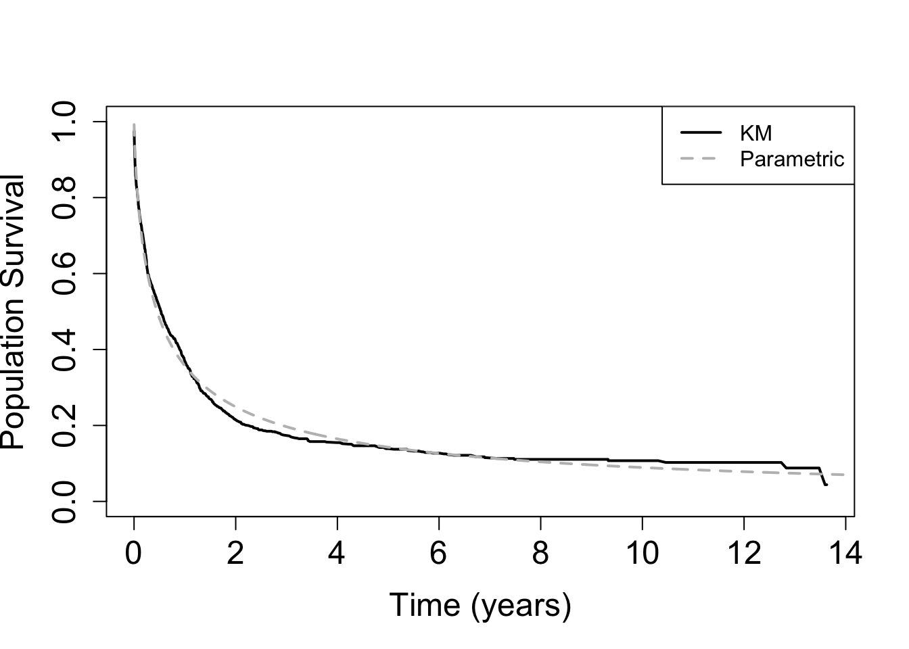

These models are fitted using the R commands nlminb and optim. Thus, the user needs to specify the initial points and to check the convergence of the optimisation step, as usual.
A description of these hazard models is presented below as well as the available baseline hazards.
1.1 General Hazard model
The GH model is formulated in terms of the hazard structure $$ h(t; , , , {}) = h_0(t {^{}}; ) {{}^{}}.
$$ where \({\bf x}\in{\mathbb R}^p\) are the covariates that affect the hazard level; \(\tilde{\bf x} \in {\mathbb R}^q\) are the covariates the affect the time level (typically \(\tilde{\bf x} \subset {\bf x}\)); \(\alpha \in {\mathbb R}^q\) and \(\beta \in {\mathbb R}^p\) are the regression coefficients; and \(\theta \in \Theta\) is the vector of parameters of the baseline hazard \(h_0(\cdot)\).
This hazard structure leads to an identifiable model as long as the baseline hazard is not a hazard associated to a member of the Weibull family of distributions (Chen and Jewell 2001).
1.2 Accelerated Failure Time (AFT) model
The AFT model is formulated in terms of the hazard structure \[
h(t; \beta, \theta, {\bf x}) = h_0\left(t \exp\{{\bf x}^{\top}\beta\}; \theta\right) \exp\{{\bf x}^{\top}\beta\}.
\] where \({\bf x}\in{\mathbb R}^p\) are the available covariates;
\(\beta \in {\mathbb R}^p\) are the regression coefficients; and \(\theta \in \Theta\) is the vector of parameters of the baseline hazard \(h_0(\cdot)\).
1.3 Proportional Hazards (PH) model
The PH model is formulated in terms of the hazard structure $$ h(t; , , {}) = h_0(t ; ) {{}^{}}.
$$ where \({\bf x}\in{\mathbb R}^p\) are the available covariates; \(\beta \in {\mathbb R}^p\) are the regression coefficients; and \(\theta \in \Theta\) is the vector of parameters of the baseline hazard \(h_0(\cdot)\).
1.4 Accelerated Hazards (AH) model
The AH model is formulated in terms of the hazard structure \[
h(t; \alpha, \theta, \tilde{\bf x}) = h_0\left(t \exp\{\tilde{\bf x}^{\top}\alpha\}; \theta\right) .
\] where \(\tilde{\bf x}\in{\mathbb R}^q\) are the available covariates;
\(\alpha \in {\mathbb R}^q\) are the regression coefficients; and \(\theta \in \Theta\) is the vector of parameters of the baseline hazard \(h_0(\cdot)\).
2 Available baseline hazards
The current version of the HazReg R package implements the following parametric baseline hazards for the models discussed in the previous section.
Weibull (W) distribution. (only for AFT, PH, and AH models)
All positive parameters are transformed into the real line using a log reparameterisation.
3 Illustrative example: R code
In this example, we analyse the LeukSurv data set from the R package spBayesSurv. This data set contains information about the survival of acute myeloid leukemia in 1,043 patients.
For the GH model, we consider the hazard level covariates (\({\bf x}\)) age (standardised), sex, wbc (white blood cell count at diagnosis, standardised), and tpi (the Townsend score, standardised); and the time level covariates (\({\bf x}\)) age (standardised), wbc (white blood cell count at diagnosis, standardised), and tpi (the Townsend score, standardised). For the PH, AFT, and AH models, we consider the covariates age (standardised), sex, wbc (white blood cell count at diagnosis, standardised), and tpi (the Townsend score, standardised).
For illustration, we fit the 4 models with both (3-parameter) PGW and (2-parameter) LL baseline hazard. In addition, we fit the GH model with GG, EW, LN, and G baseline hazards. We compare these models in terms of AIC (BIC can be used as well). We summarise the best selected model with the available tools in this package.
# Average population survival function and KM estimatorpop_surv <-Vectorize(function(t){ p0 <-dim(Xt)[2] p1 <-dim(X)[2] theta1 <- MLE[1]; theta2 <- MLE[2]; alpha <- MLE[3:(2+p0)]; beta <- MLE[(3+p0):(2+p0+p1)] x.alpha <- Xt%*%alpha x.dif <- X%*%beta - x.alpha out <-mean( exp( -chllogis(t*exp(x.alpha), theta1, theta2)*exp(x.dif) ) )return(out)})# Kaplan-Meier estimator km <-survfit(Surv(times, status) ~1)# Comparisonplot(km$time, km$surv, type ="l", col ="black", lwd =2, lty =1, ylim =c(0,1),xlab ="Time (years)", ylab ="Population Survival", main ="",cex.axis =1.5, cex.lab =1.5)curve(pop_surv,0.001,14, lwd =2, n =1000, add =TRUE, lty =2, col ="gray")legend("topright", legend =c("KM","Parametric"), col =c("black","gray"), lwd =c(2,2), lty =c(1,2))

Code
# Confidence intervals for the survival function based on a normal approximation# at specific time points t0# Hessian and asymptotic covariance matrixHESS <-hessian(func = OPTLLGH$log_lik, x = OPTLLGH$OPT$par)Sigma <-solve(HESS)# Reparameterised MLE r.MLE <- OPTLLGH$OPT$par# The function to obtain approximate CIs based on Monte Carlo simulations # from the asymptotic normal distribution of the MLEs# t0 : time where the confidence interval will be calculated# level : confidence level# n.mc : number of Monte Carlo iterationsconf.int.surv <-function(t0, level, n.mc){ p0 <-dim(Xt)[2] p1 <-dim(X)[2] mc <-vector() S.par <-function(par){ mean( exp( -chllogis(t0*exp(Xt%*%par[3:(2+p0)]), par[1], par[2])*exp(X%*%par[(3+p0):(2+p0+p1)]-Xt%*%par[3:(2+p0)]) ) ) }for(i in1:n.mc) { val <-rmvnorm(1,mean = r.MLE, sigma = Sigma) val[2] <-exp(val[2]) mc[i] <-S.par(val) } L <-quantile(mc,(1-level)*0.5) U <-quantile(mc,(1+level)*0.5) M <-S.par(MLE)return(c(L,M,U))}# times for CIs calculationstimesCI <-c(1,2.5,5,7.5,10,12.5)CIS <-matrix(0, ncol =4, nrow =length(timesCI))for(k in1:length(timesCI)) CIS[k,] <-c(timesCI[k],conf.int.surv(timesCI[k],0.95,10000))colnames(CIS) <-cbind("year","lower","population survival","upper")print(kable(CIS,digits=4))
Chen, Y. Q., and N. P. Jewell. 2001. “On a General Class of Semiparametric Hazards Regression Models.”Biometrika 88 (3): 687–702.
Chen, Y. Q., and M. C. Wang. 2000. “Analysis of Accelerated Hazards Models.”Journal of the American Statistical Association 95 (450): 608–18.
Cox, D. R. 1972. “Regression Models and Life-Tables.”Journal of the Royal Statistical Society: Series B (Methodological) 34 (2): 187–202.
Kalbfleisch, J. D., and R. L. Prentice. 2011. The Statistical Analysis of Failure Time Data. John Wiley & Sons.
Rubio, F. J., L. Remontet, N. P. Jewell, and A. Belot. 2019. “On a General Structure for Hazard-Based Regression Models: An Application to Population-Based Cancer Research.”Statistical Methods in Medical Research 28: 2404–17.